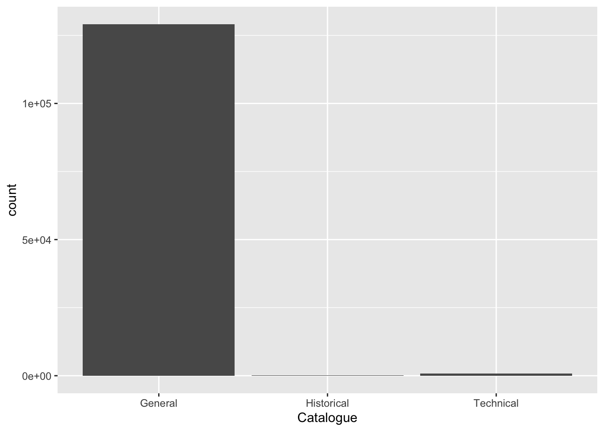
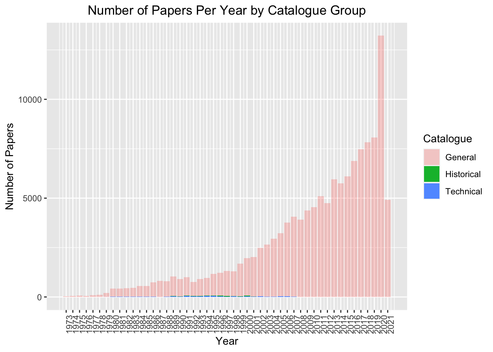

library(tidytuesdayR)
library(tidyverse)
library(nberwp)##
## Attaching package: 'nberwp'## The following objects are masked _by_ '.GlobalEnv':
##
## authors, paper_authors, paper_programs, papers, programs#tuesdata <- tidytuesdayR::tt_load('2021-09-28')
papers <- readr::read_csv('https://raw.githubusercontent.com/rfordatascience/tidytuesday/master/data/2021/2021-09-28/papers.csv')## Rows: 29434 Columns: 4## ── Column specification ────────────────────────────────────────────────────────
## Delimiter: ","
## chr (2): paper, title
## dbl (2): year, month##
## ℹ Use `spec()` to retrieve the full column specification for this data.
## ℹ Specify the column types or set `show_col_types = FALSE` to quiet this message.authors <- readr::read_csv('https://raw.githubusercontent.com/rfordatascience/tidytuesday/master/data/2021/2021-09-28/authors.csv')## Rows: 15437 Columns: 4## ── Column specification ────────────────────────────────────────────────────────
## Delimiter: ","
## chr (4): author, name, user_nber, user_repec##
## ℹ Use `spec()` to retrieve the full column specification for this data.
## ℹ Specify the column types or set `show_col_types = FALSE` to quiet this message.programs <- readr::read_csv('https://raw.githubusercontent.com/rfordatascience/tidytuesday/master/data/2021/2021-09-28/programs.csv')## Rows: 21 Columns: 3## ── Column specification ────────────────────────────────────────────────────────
## Delimiter: ","
## chr (3): program, program_desc, program_category##
## ℹ Use `spec()` to retrieve the full column specification for this data.
## ℹ Specify the column types or set `show_col_types = FALSE` to quiet this message.paper_authors <- readr::read_csv('https://raw.githubusercontent.com/rfordatascience/tidytuesday/master/data/2021/2021-09-28/paper_authors.csv')## Rows: 67090 Columns: 2## ── Column specification ────────────────────────────────────────────────────────
## Delimiter: ","
## chr (2): paper, author##
## ℹ Use `spec()` to retrieve the full column specification for this data.
## ℹ Specify the column types or set `show_col_types = FALSE` to quiet this message.paper_programs <- readr::read_csv('https://raw.githubusercontent.com/rfordatascience/tidytuesday/master/data/2021/2021-09-28/paper_programs.csv')## Rows: 53996 Columns: 2## ── Column specification ────────────────────────────────────────────────────────
## Delimiter: ","
## chr (2): paper, program##
## ℹ Use `spec()` to retrieve the full column specification for this data.
## ℹ Specify the column types or set `show_col_types = FALSE` to quiet this message.First we have to join all 5 data frames together, and we can do that by using left_join. Each dataframe has a key column that matches with another dataframe, and we can use that to join them all together.
CombinedFrame <- left_join(papers, paper_authors) %>%
left_join(authors) %>%
left_join(paper_programs) %>%
left_join(programs)## Joining, by = "paper"## Joining, by = "author"## Joining, by = "paper"## Joining, by = "program"str(CombinedFrame)## spec_tbl_df [130,081 × 11] (S3: spec_tbl_df/tbl_df/tbl/data.frame)
## $ paper : chr [1:130081] "w0001" "w0002" "w0003" "w0004" ...
## $ year : num [1:130081] 1973 1973 1973 1973 1973 ...
## $ month : num [1:130081] 6 6 6 7 7 7 8 9 9 9 ...
## $ title : chr [1:130081] "Education, Information, and Efficiency" "Hospital Utilization: An Analysis of SMSA Differences in Hospital Admission Rates, Occupancy Rates and Bed Rates" "Error Components Regression Models and Their Applications" "Human Capital Life Cycle of Earnings Models: A Specific Solution and Estimation" ...
## $ author : chr [1:130081] "w0001.1" "w0002.1" "w0003.1" "w0004.1" ...
## $ name : chr [1:130081] "Finis Welch" "Barry R Chiswick" "Swarnjit S Arora" "Lee A Lillard" ...
## $ user_nber : chr [1:130081] "finis_welch" "barry_chiswick" "swarnjit_arora" NA ...
## $ user_repec : chr [1:130081] NA "pch425" NA "pli669" ...
## $ program : chr [1:130081] NA NA NA NA ...
## $ program_desc : chr [1:130081] NA NA NA NA ...
## $ program_category: chr [1:130081] NA NA NA NA ...
## - attr(*, "spec")=
## .. cols(
## .. paper = col_character(),
## .. year = col_double(),
## .. month = col_double(),
## .. title = col_character()
## .. )
## - attr(*, "problems")=<externalptr>It’s also mentioned that the first letter of each paper’s ID number in the first column states whether it is historical (h), technical (t) or general (w). We need to create another column telling us that information
CombinedFrame$Catalogue <- substr(CombinedFrame$paper, 1, 1)
CombinedFrame$Catalogue[CombinedFrame$Catalogue == "w"] <- "General"
CombinedFrame$Catalogue[CombinedFrame$Catalogue == "h"] <- "Historical"
CombinedFrame$Catalogue[CombinedFrame$Catalogue == "t"] <- "Technical"
str(CombinedFrame)## spec_tbl_df [130,081 × 12] (S3: spec_tbl_df/tbl_df/tbl/data.frame)
## $ paper : chr [1:130081] "w0001" "w0002" "w0003" "w0004" ...
## $ year : num [1:130081] 1973 1973 1973 1973 1973 ...
## $ month : num [1:130081] 6 6 6 7 7 7 8 9 9 9 ...
## $ title : chr [1:130081] "Education, Information, and Efficiency" "Hospital Utilization: An Analysis of SMSA Differences in Hospital Admission Rates, Occupancy Rates and Bed Rates" "Error Components Regression Models and Their Applications" "Human Capital Life Cycle of Earnings Models: A Specific Solution and Estimation" ...
## $ author : chr [1:130081] "w0001.1" "w0002.1" "w0003.1" "w0004.1" ...
## $ name : chr [1:130081] "Finis Welch" "Barry R Chiswick" "Swarnjit S Arora" "Lee A Lillard" ...
## $ user_nber : chr [1:130081] "finis_welch" "barry_chiswick" "swarnjit_arora" NA ...
## $ user_repec : chr [1:130081] NA "pch425" NA "pli669" ...
## $ program : chr [1:130081] NA NA NA NA ...
## $ program_desc : chr [1:130081] NA NA NA NA ...
## $ program_category: chr [1:130081] NA NA NA NA ...
## $ Catalogue : chr [1:130081] "General" "General" "General" "General" ...
## - attr(*, "spec")=
## .. cols(
## .. paper = col_character(),
## .. year = col_double(),
## .. month = col_double(),
## .. title = col_character()
## .. )
## - attr(*, "problems")=<externalptr>Here we’ll look at the distribution of the number of papers in each catalogue group
ggplot(CombinedFrame) +
geom_bar(aes(x = Catalogue))
There are considerably more papers in the general group than the historical or technical group.
Here we’ll look at the distribution of the number of papers in each year by their catalogue group.
ggplot(CombinedFrame) +
geom_bar(aes(x = year,fill = Catalogue, alpha = Catalogue)) +
scale_alpha_manual(values = c(0.3, 1, 1)) +
ggtitle("Number of Papers Per Year by Catalogue Group") +
xlab("Year") +
scale_x_continuous(labels = unique(CombinedFrame$year),breaks=unique(CombinedFrame$year)) +
ylab("Number of Papers") +
theme(axis.text.x = element_text(angle = 90),
plot.title = element_text(hjust = 0.5))
As you can see from this graph, the overall number of papers has increased dramatically over time, especially in 2020. The number of General papers dwarfs the numbers of Historical and Technical papers. However, from 1978-2007, a small number of Technical papers were being released along with a small number of Historical papers in the 1990s. As soon as 2007 hit, the number of Historical and Technical papers being released dropped to 0 and all the papers released afterwards were considered General papers.